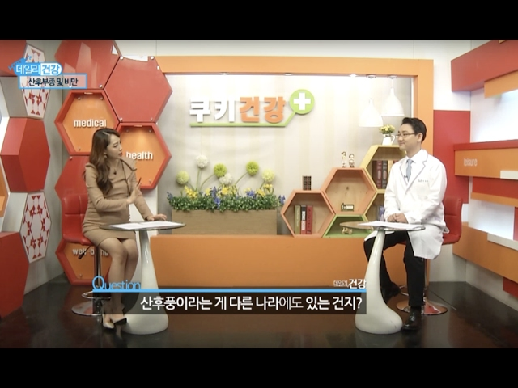

회복을 위해 지금 필요한 것을 함께 정합니다.
- 01현재의 불편
- 02진료와 치료
- 03경과 확인
| 구분 | 살펴볼 점 | 알려주실 내용 |
|---|---|---|
| 산후조리, 한의원에서는 이렇게 | 관련 안내와 진료 과정 | 궁금한 점과 기존 진료 경험 |
| 해온한의원에서는 모든 한의사가 출산과 육아를 성공적으로 수행하고 있습니다. | 관련 안내와 진료 과정 | 궁금한 점과 기존 진료 경험 |
| I 해온의 출산 후 예방, 치료목표 | 관련 안내와 진료 과정 | 궁금한 점과 기존 진료 경험 |
궁금한 항목을 펼쳐보세요.
필요한 설명과 자료를 주제별로 확인할 수 있습니다.
01산후조리, 한의원에서는 이렇게＋
산후조리, 한의원에서는 이렇게
전화, 문자, 카카오톡, 네이버. 편한 방법으로 문의주시고, 예약하세요.
02해온한의원에서는 모든 한의사가 출산과 육아를 성공적으로 수행하고 있습니다.＋
산욕기동안에는 적절한 산후관리가 중요합니다.
의학적인 측면에서 산후관리란 임신, 분만에 의해 생긴 모체의 해부학적, 기능적 변화가 임신이전의 상태로 회복될때까지 행해지는 의학적, 예방적 관리를 말합니다.
이 기간동안에는 출산 후 허약해진 몸과 마음을 이전의 건강상태로 회복할 수 있도록 음식, 거주, 활동을 적절하게 하여 산모의 몸이 잘 회복되도록 하는 것입니다.
해온한의원에서는 모든 한의사가 출산과 육아를 성공적으로 수행하고 있습니다.
안심하시고 모든 것에 대해 물어보세요.
03I 해온의 출산 후 예방, 치료목표＋
I 해온의 출산 후 예방, 치료목표
어혈관리瘀血
산후 자궁주위는 급격한 변화가 동반됩니다. 이중 대표적인 것이 관절-척추통증입니다.
두통, 머리의 압박감, 가슴압박감, 척추 및 관절의 통증 및 시림, 열감, 저림 등이 대표적인 증상입니다.
한국인 산모는 골반의 형태 및 산도의 크기가 서양인들과 다릅니다. 따라서 생식기의 직접적인 회복이외에 기혈이 약해지면서 오로가 완전히 배출되지 않거나 골반내 회복이 더뎌지는 경우가 많습니다.
생리적으로 회복되는 경우가 많으나, 30세 이후 출산하는 경향이 많은 국내출산문화의 특성상 회복이 지연되면 수년간, 아니 평생 후유증을 안고 살아가야 하는 경우도 있는 만큼 30세 이후 노산인 경우 적극적인 예방관리가 필요합니다.
보통 어혈瘀血관리는 다른 대안이 없습니다. 파어, 보혈, 보양과 같은 한약 처방을 통한 예방관리가 최선입니다.
마음건강관리 七情
산후우울감은 50%의 산모에게서 나타난다고 보는 보고가 있을만큼 흔한 증상입니다.
주로 불안감, 초조감, 피로, 불면, 과민성, 급격한 감정변화, 잦은 울음이 특징입니다.
다만, 우울감의 양상은 환자마다 다릅니다. 산후우울감, 산후우울증, 산후정신병은 모두 산후의 정신장애를 일컫는 말로 증상의 강도 및 영향정도가 다릅니다. 서구문화권에서는 슬픔, 불안감, 죄책감 등과 같은 증상을 강하게 호소하지만 비서구문화권에서는 신체적인 증상으로 표현하는 경향도 강합니다. 우울감정이 밖으로 표현되면서 신체적인 증상역시 함께 나타나는데, 주로 이시기의 자율신경계의 실조와 관련이 있다고 생각합니다.
칠정七情은 심리적인 장애心肝氣鬱로 인해 손상이 되며,
이 경우 전신증상과 환경, 가족관계, 사회활동 등 전반적인 진단과 가족의 적극적 도움도 필요합니다. 특히 남편의 도움은 절대적입니다.
산후부종, 체중관리
산후부종은 체중증가와는 다르지만, 산모의 입장에서 느끼는 증상이 혼재되기 때문에 임상에서는 함께 다루고 있습니다.
보통 분만직후 대부분의 산모가 부종과 체중증가, 그리고 원상태로 돌아오지 못할까봐 미리 불안해하는 두려움을 겪습니다. 일반적으로 분만 후 첫3일간은 부종이 빠져나가지 않습니다. 정상적 이뇨작용은 분만후 2-5일이 경과된 후 나타나기 시작하며 2-3kg정도 수분배출이 함께 이루어지는 것이 보통입니다. 하지만 이후에도 완만한 수분배출이 이루어지며, 체중감량의 폭이 완만해지는 3-6개월 이후에도 과체중상태에 머물러 있게 된다면 주의해야 합니다. 체력증진, 회복에 도움이 된다고 하여 보양식을 무조건적으로 먹는 것 보다는 균형잡힌 영양관리, 식단관리가 가장 중요합니다.
한의학적으로는 최근 연구결과 부종지수0.35(Edema Index)이상인 경우 산후부종으로 진단하게 됩니다. 0.35를 1단계, 0.36을 2단계, 0.37이상을 3단계로 나누어 진단합니다. 그리고 체중역시 표준곡선과 비교해 과체중상태인지 여부를 관찰하게 되는데 3-6개월에 진료를 받고 치료계획을 세우는 것이 최선이겠죠.

04I 산후조리, 산후풍 한약의 의미＋
I 산후조리, 산후풍 한약의 의미
한마디로 설명드리자면 더 안전하게 회복이 잘 되도록 하는 것입니다.
자궁 퇴축이 원활하게 진행되도록 하며
산후 출혈을 예방하고
면역을 회복시키며
혈소판수치를 회복시키고
붓기를 감소시키고 통증을 예방하는데 도움이 됩니다.
1단계 한약 | 산욕기 1차 한약은 출산 직후 24시간부터 복용을 하는 것이 추천되며 보통 10-15일간 복용을 하게 됩니다. 전통적으로 어혈을 예방하고 치료하기 위해 처방되는 것이 생화탕입니다. 해온한의원에서는 체질에 따라 약물이 가감된 형태의 생화탕가미방이 처방된답니다. 여러 임상 연구결과 생화탕은 다음과 같은 객관적 과학적 근거를 가진다고 보고되고 있습니다.
|
2단계 한약 | 2차한약은 1차 한약을 복용한 후 연이어 복용하는 것이 추천되며, 보통 15-30일간 복용을 하게 됩니다. 해온한의원에서는 체질에 따라 약물이 가감된 형태의 보허생화탕가미방, 보허탕가미방, 궁귀조혈음가미방이 처방된답니다. 질환 발생가능성 개선때까지 산후 질환 예방을 위해 복용합니다. 여러 임상 연구결과 2차 한약은 다음과 같은 객관적 과학적 근거를 가진다고 보고되고 있습니다.
|
3단계 한약 | 평소 허약체질이셨던 분들, 고령임신에 해당되는 경우 혹은 산후 질환이 의심이 된다면 치료시까지 3단계한약을 복용하시는 것이 좋습니다. 산모의 어머니께서 출산 후 산후풍으로 힘들었다면 특히 예방적 차원에서 복용해야합니다. 산후풍, 산후출혈, 산후발열, 산후감염, 산후천식, 산후피부질환, 산후알러지질환, 산후고혈압 등에 대해서 치료합니다. |
진료 전, 세 가지만 준비해 주세요.
증상의 기록
가장 불편한 점과 시작한 시점, 반복되는 상황을 알려주세요.
검사와 치료 이력
기존 검사 결과와 복용 중인 약을 함께 확인합니다.
꼭 묻고 싶은 질문
치료 목표와 생활관리 등 궁금했던 점을 편하게 이야기해 주세요.
이 안내는 건강에 대한 이해를 돕는 참고 정보입니다. 증상과 질환에 대한 정확한 판단은 의료진의 진료가 필요합니다.